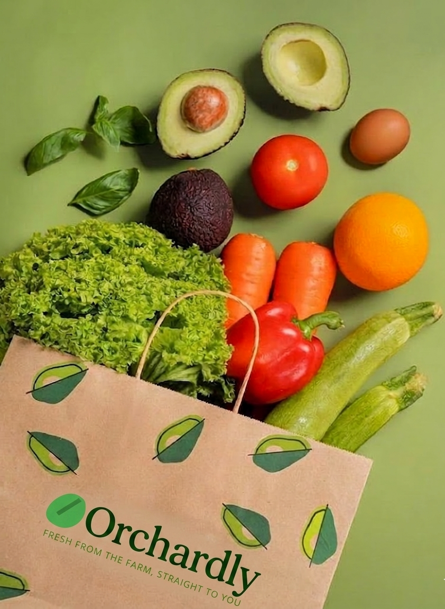

About Orchardly
Bringing the Orchard to Your Doorstep
At Orchardly, we believe that everyone deserves access to fruit the way nature intended: sun-ripened, hand-picked, and bursting with flavor. Our journey began with a simple observation—the "fresh" fruit in grocery stores often travels thousands of miles and spends weeks in cold storage before reaching your plate. We decided to change that. Founded in 2024, Orchardly bridges the gap between local sustainable growers and your home. By cutting out the middleman and long-haul shipping, we ensure that our produce is delivered at the peak of its nutritional value. Every pear, apple, and berry is carefully inspected to meet our "Orchard-Standard" before it ever leaves the farm. We aren't just a delivery service; we are a community of fruit enthusiasts committed to supporting local agriculture and promoting a healthier, more vibrant lifestyle for our customers.
